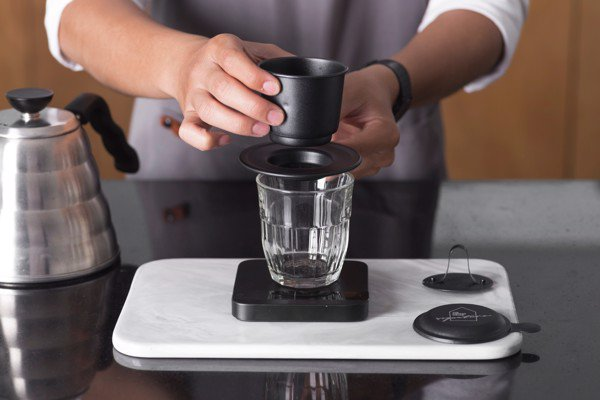

Tổng hợp các cách pha cà phê ngon và phổ biến

-
Cà phê phin: Trong các cách pha chế cafe ở Việt Nam, có thể nói cách pha cà phê phin vẫn là phổ biến nhất.
Dụng cụ pha chế vô cùng đơn giản, chỉ gồm một chiếc cốc và một chiếc phin đặt ở trên. So với những cách pha
thông thường khác, cách pha phin tuy mất nhiều thời gian và kỳ công hơn, song, lại mang đến hương vị đậm chất cà phê từ những giọt đầu tiên.
-
Pour Over: Pour over có nghĩa là 'nước rót qua'. Thuật ngữ này dùng để chỉ chung cách pha cà phê mà ở đó, người ta đổ nước nóng lên bột cà phê
để chiết xuất cà phê, dung dịch cà phê sau đó sẽ chảy nhỏ giọt xuống một bình chứa. Người ta thường dùng một dụng cụ (thường có hình phễu) để lọc,
giữ bột cà phê lại trong quá trình chiết xuất. Trên thế giới, có nhiều dụng cụ khác nhau như: Phễu V60, phễu Kalita... tuy nhiên, phễu V60 được sử dụng rộng rãi nhất.
- Cách pha cà phê kiểu ngâm(Cà phê Cold Brew): Nếu như các loại cà phê khác thường được pha nóng thì cà phê Cold Brew lại được pha kiểu lạnh. Cách pha cà phê này bắt nguồn từ những thủy
thủ Hà Lan. Bởi sự thiếu thốn về vật chất trên tàu nên họ phải ngâm cà phê trong nước lạnh để chiết xuất, vô tình tạo ra một cách pha cafe ngon và đặc biệt. So với cách pha nóng, thời gian
pha chế cà phê Cold Brew sẽ lâu hơn do phải ngâm cà phê trong nước lạnh từ 4-24 tiếng (tùy theo lượng bột cà phê). Cà phê ủ lạnh có hương vị nhẹ nhàng, ít đắng và ít chua hơn cà phê thường.
- Cách pha cà phê bằng áp suất(Cà phê Espresso): Đây là một loại cà phê vô cùng phổ biến có xuất xứ từ Ý. Espresso - tên của loại cà phê này được đặt theo chính cách pha chế của nó.
Từ Espresso bắt nguồn từ thì quá khứ của từ Esprimere (nghĩa là ‘được ép ra’ trong tiếng Ý) - chỉ một loại cà phê được tạo ra từ phương pháp ép.Người ta sẽ sử dụng một chiếc máy pha cafe
chuyên dụng (gọi là Espresso Machine) cho hơi nước nóng ép cà phê đã được rang xay sẵn với áp suất 9 đến 10 atmosphere. Kết quả là, chưa đầy 30 giây, bạn sẽ có một tách Espresso đậm đặc
gấp nhiều lần cà phê thông thường. Một tách cà phê Espresso nổi bật với 2 lớp: Lớp bọt khí màu vàng óng ở trên bề mặt và lớp dung dịch cà phê màu đen ở dưới.
- Cách pha cà phê biến thể (Latte)Tín đồ của cà phê truyền thống thường không mấy “yêu quý” Latte. Nhưng tín đồ của cái đẹp lại ngược lại. Tuy hương vị không được đậm đà như những cách
pha truyền thống, nhưng Latte mang đến một phong cách cà phê cổ điển, rất hoa mỹ và yêu kiều. Latte là sự kết hợp của espresso và sữa. Tuy nhiên, nghệ thuật pha Latte nằm ở khả năng tạo hình và
hòa trộn hương vị. Duy trì cho sữa và cà phê ở tỷ lệ chuẩn mới có được một cốc Latte ngon từ hương vị đến cái nhìn nghệ thuật. Do đó, một trong những kỹ năng quan trọng nhất của người pha Latte
là “trộn sữa” – tạo bọt sữa.